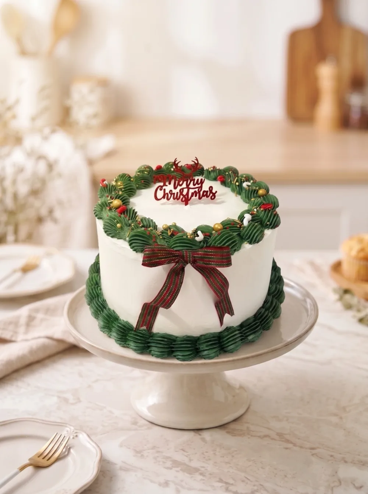
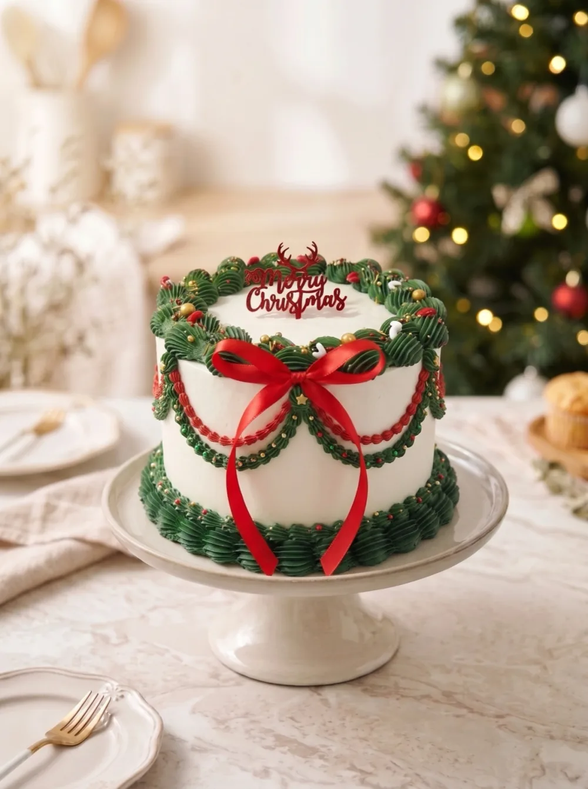
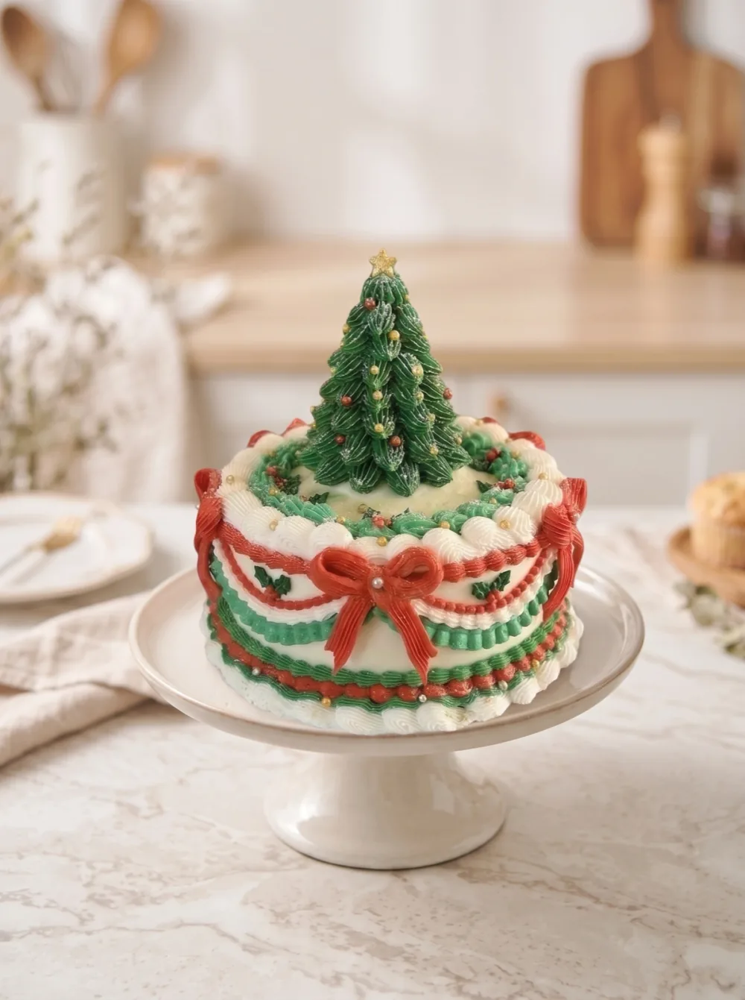
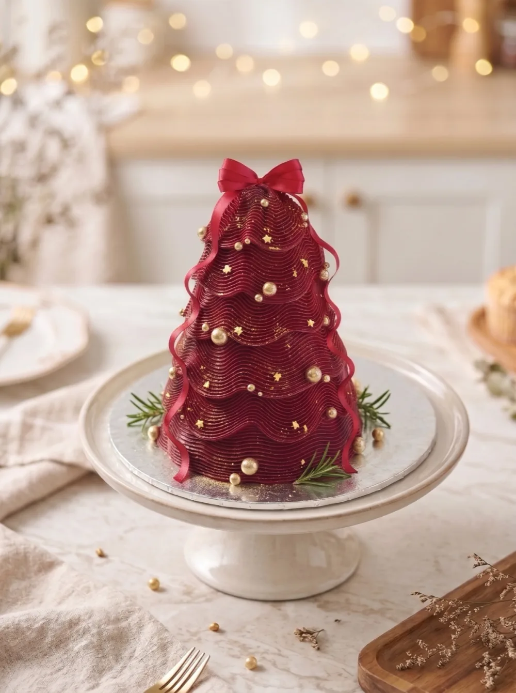
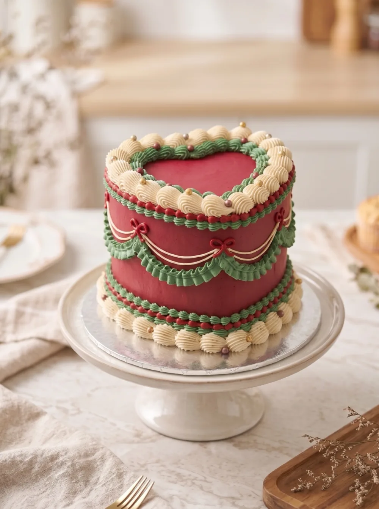
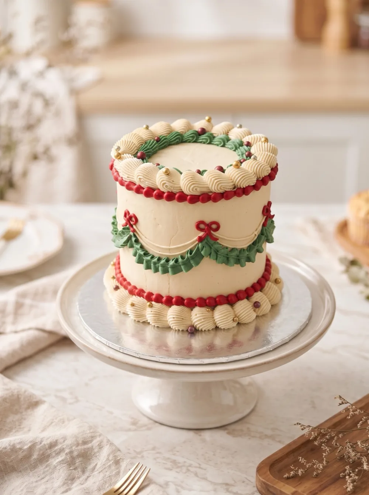

Christmas Cakes in Cebu: 2026 Designs, Prices & Delivery
Hand-piped Christmas cakes for Noche Buena, office parties, and gifts across Metro Cebu.

2026 seasonal offer: The 6-inch Christmas vintage cake is ₱650 through December 25, 2026; its regular price is ₱1,650. Orders need at least three days' notice, and availability for Christmas dates must be confirmed before paying the 50% deposit.
White Cakes is a made-to-order cloud kitchen in Lahug. We hand-pipe buttercream cakes for a date you choose; there is no storefront or walk-in counter. These photos are seasonal design references, not a fixed catalogue promise. Send the design you like and we will confirm what fits the date and quote any custom work before you commit.
Christmas cake designs and the 2026 special
Christmas vintage cake, 6 inch · through December 25, 2026
Regular price ₱1,650
Christmas special ₱650
A 50% deposit confirms the order after we confirm your date. The cake is perishable and made to order, so returns are not accepted. Prices for other seasonal or custom designs depend on the size and piping; see the custom cake starting prices. Bouquet Cakes are price on request.
Choose a seasonal look
Use these hand-piped examples to tell us the colours and details you like. We will confirm whether your requested finish is practical for the size, flavour, and date.





Pick a cake for the table or as a gift
- Christmas vintage, 6 inch: the ₱650 seasonal offer above, subject to date confirmation.
- Signature Marble: a 6-inch ivory cake with dusty-blue marbling, a shell border, and one rose. See custom cakes in Cebu.
- Bento: a 4-inch cake for two generous or three modest servings; current price and details are on the Bento cake page.
- Bouquet Cake: buttercream rosettes arranged like a wrapped bouquet; it is price on request.
Flavours listed by White Cakes are chocolate, vanilla, ube, mango, and red velvet. Include your choice and any message in the enquiry. If the exact finish is a surprise, tell us who may receive order messages.
Looking specifically for a vintage cake in Cebu? Read about the hand-piped style, current seasonal offer and what to confirm before ordering.
When to order a Christmas cake in Cebu
Three days is the minimum, not a guarantee that a busy date remains open. For Noche Buena on December 24, ask by December 21 at the latest; for Media Noche on December 31, ask by December 28 at the latest. Earlier is better for office parties, weekends, and holiday dates. Christmas Day delivery depends on the bench schedule, so message us first.
Send a calendar date rather than “the weekend before Christmas.” We confirm availability before you pay. Read the Christmas cake ordering and delivery guide for the full holiday schedule and storage advice.
Christmas cake delivery across Metro Cebu
Delivery is available in Cebu City, Mandaue City, and Lapu-Lapu City, including Mactan, by arrangement. We quote a delivery window rather than an exact minute. Send the complete address, barangay, visible landmark, receiver's name and mobile number. Someone must be present to receive the cake; pickup in Cebu City may be arranged after confirmation.
Request your Christmas cake
Include the date, cake choice, flavour, short inscription, full delivery address or pickup request, and a reference photo if you have one. We reply within 24 hours with availability or a question.